Tutorial 2: Irregular unconformities
Exercise 2: Irregular basins over basement structures
This exercise demonstrates how we can import pre-existing geological interpretations from geometric modelling packages such as Microstation, Vulcan, GOCAD, Micromine etc. In this particular example we will import a triangulated unconformity surface from Vulcan (in DXF format).
a) In order to set up a pre-unconformity geology, select Read History from the File menu, and select the file q2.his (click on Overwrite when the time comes) which creates a default stratigraphy
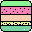
with a default Tilt event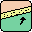
. This produces a block diagram which looks something like this: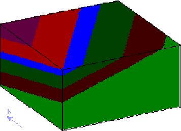
b) Now we need to import an unconformity, so add an unconformity event
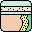
to the history window. The unconformity event definition window contains many types of parameters, first of all concentrate on the Surface Shape group box: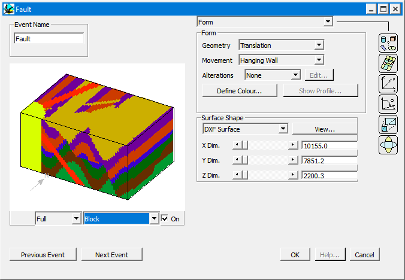
•In order to change from a flat unconformity surface to one defined by triangulation, select DXF Surface (instead of Flat Plane) from the Menu list button. Now select the file uncon2.dxf . At this point the actual X, Y & Z dimensions of the bounding box (see below) for the surface will be automatically filled into the X,Y and Z dimensions area.
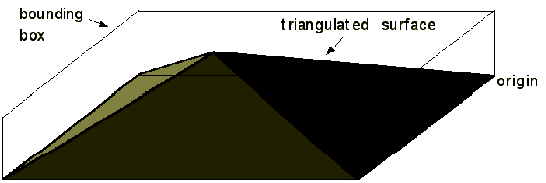
•The triangulated surface is normalised to a flat best fit plane that fits the curved surface (ie the 1st order trend surface).
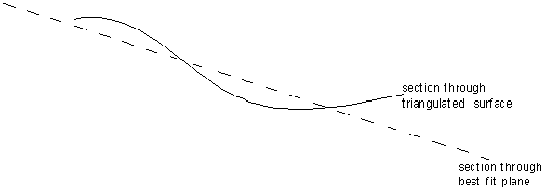
A view of the topography of the surface projected onto the best fit plane can be obtained by clicking on the View button. High points are bright, and low points are dark. Note that the topography of this surface has been defined to be a minimum around the edge of the defined area, because the triangulated surface has to merge with a flat plane outside the defined area.
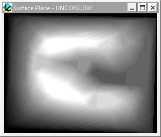
•On the assumption that we actually want a generally horizontal unconformity surface, switch to the Orientation group box
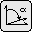
, and set the Dip to 0° and Dip Direction to 0°.•The origin of DXF surfaces in Noddy is defined to be the lower North-East corner of the bounding box, so in order for the unconformity to occur within the default block volume, set the X Position parameter in the Position group box to 9000, the Y Position parameter at 9000 and the Z Position to 2500.
•Click on the Stratigraphy Group Box Icon , delete all the layers but one, and edit the Density and Susceptibility of this layer to 2.7 and 1.35e-03 respectively. Finally exit from the Unconformity definition window.
c) From the Geology menu select Block Diagram, and you will be presented with a full resolution block diagram. You should now see tilted strata appearing through a window defined by the unconformity:
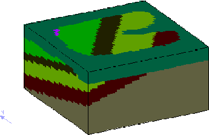
•This block diagram is rotatable by dragging the cursor in the window, and scalable by dragging the cursor with the shift key held down.
•To produce a block diagram that shows the geology immediately below the unconformity surface, click in the diagram with the right mouse button, which brings up a window that allows you to make any of the rock types transparent:

•First of all switch the Display Type menu to Specific Layers, and then select all of the layers except the lowest layer on the list , and then click on OK. Click on OK and you will then have a block diagram with the rocks above the unconformity made transparent.
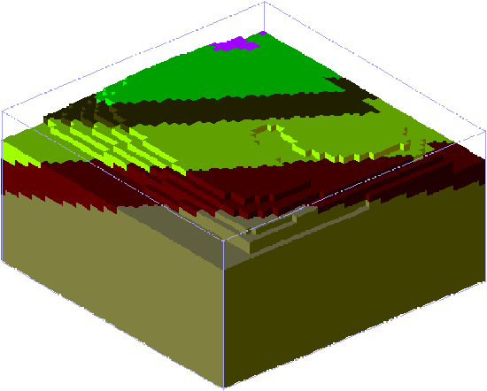
d) You are now ready to calculate the resulting gravity and magnetics images by selecting Calculate Anomalies->Anomalies from the Geophysics menu, this will ask you for a file name for the results of this calculation. Once the calculation is complete both the gravity and magnetics images will be displayed.
e) The outcrop pattern of the unconformity is clear in parts of the magnetics image, but is unclear in other areas, and is very hard to pick at all in the gravity image. A first vertical derivative of the magnetics image would enhance the unconformity contact. Noddy no longer calculates vertical derivatives, so export the image with or and calculate the derivative in another package.
Noddy · open source under the MIT licence · Loop3D/noddy_qt